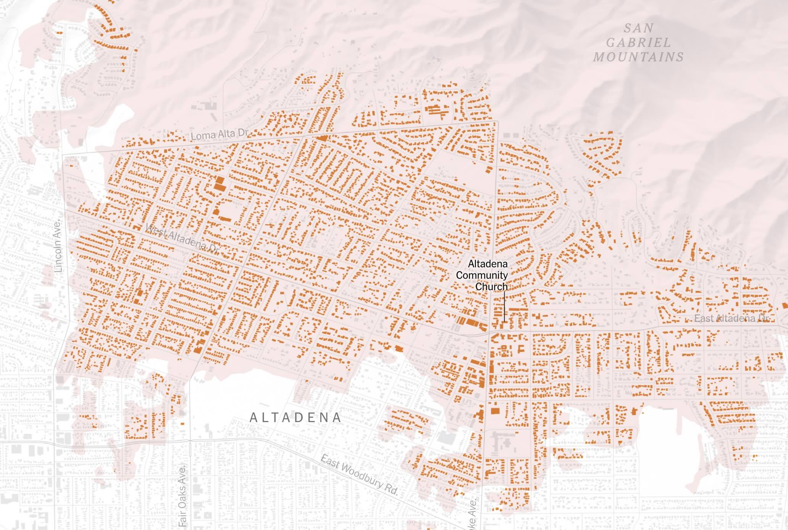

Zach Levitt
Hello, I'm currently making maps and interactive graphics at the New York Times. Previously, I worked at the Washington Post, NPR and the Los Angeles Times.
I have a background in software development, cartographic design, geospatial analysis and data visualization, in addition to oil painting, figure drawing and creative coding.
Please be in touch via levittzach [at] gmail.
Here are some selected projects I have worked on:


Where America's developed areas are growing
Washington Post
'War Against the Children'
New York Times
The Monsoon Is Becoming More Extreme
New York Times
The Real-World Costs of the Digital Race for Bitcoin
New York Times
How Louisiana Built Trump’s Busiest Deportation Hub
New York Times

Mapping the Damage in Altadena and Pacific Palisades
New York Times

Extreme Weather Maps: Track the Risks for Your Places
New York Times
Did Republicans Take Washington in a Landslide? Not So Much
New York Times
Where This Summer Was Relentlessly Hot
New York Times
Why the West Got Buried in Snow, While the East Got Little
New York Times
Will You Have a White Christmas This Year?
New York Times
Why So Many Children of Immigrants Rise to the Top
New York Times
Who Will Remember the Horrors of Ukraine?
New York Times
Pregnant? Need Help? They Have an Agenda.
New York Times
Mapping America's racial population shifts over the last decade
Washington Post
Mapping America's hospitalization and vaccination divide
Washington Post

What would a powerful earthquake feel like where you live?
Los Angeles Times